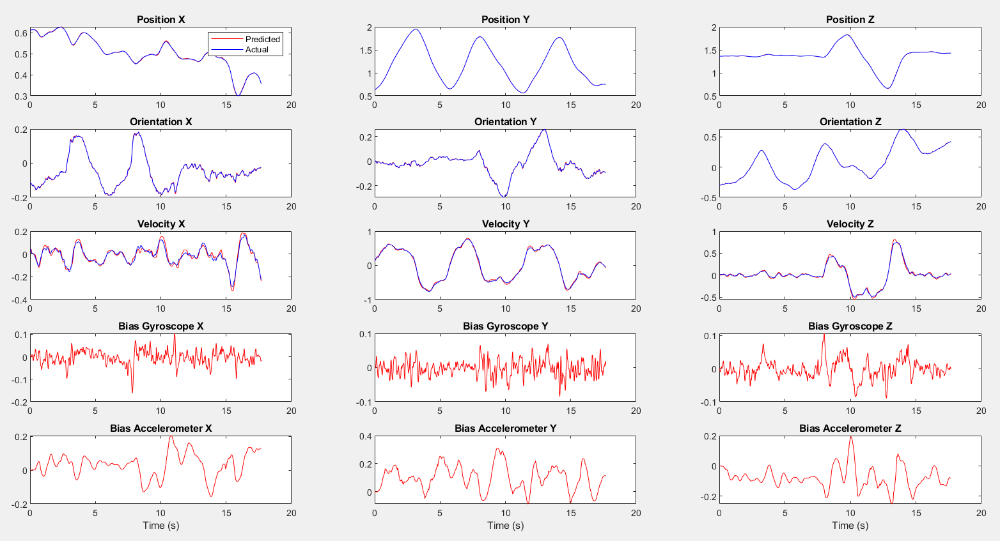
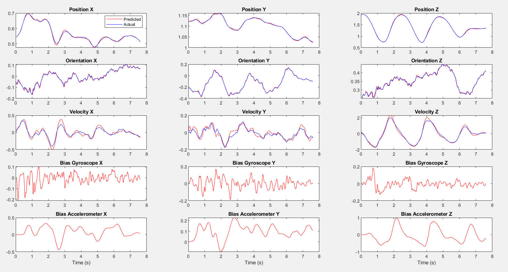
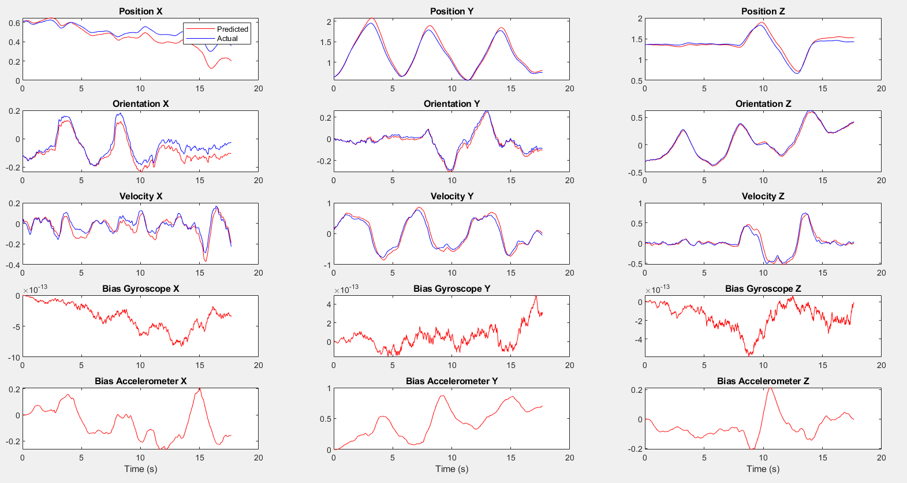
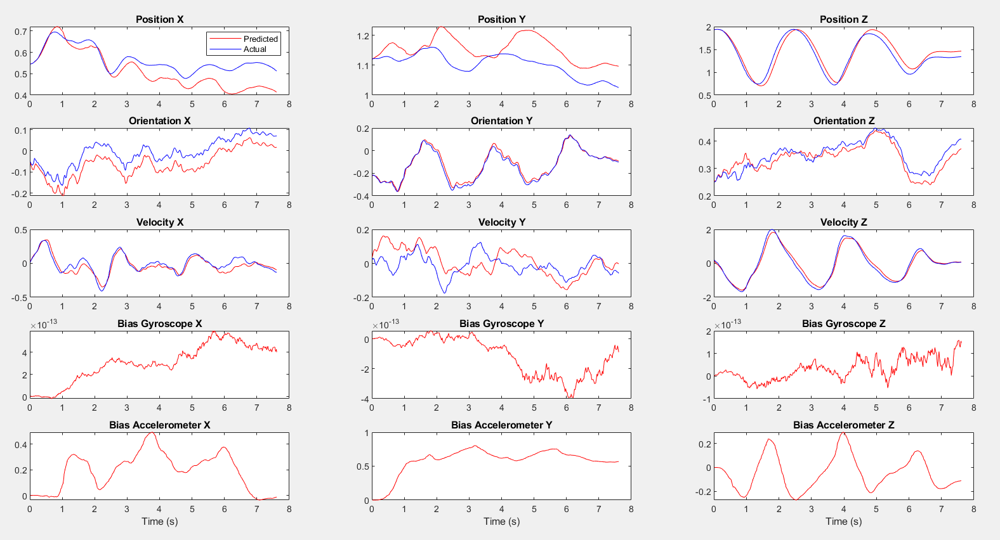

In this project, I develop an Unscented Kalman Filter (UKF) to fuse the inertial data already used in project 1 and the vision-based pose and velocity estimation developed in project 2.
Unscented Kalman Filter: A Deep Dive
The Unscented Kalman Filter is an advanced state estimation algorithm that addresses the limitations of the traditional Kalman Filter by effectively handling nonlinear systems. The UKF operates on the principle of capturing the mean and covariance of a probability distribution through a deterministic sampling technique known as the Unscented Transform.
The Unscented Transform
The Unscented Transform selects a set of points (sigma points) around the mean state in such a way that their mean and covariance match the original distribution. These points are then propagated through the nonlinear system model, allowing for an accurate approximation of the resulting mean and covariance without the need for linearization.
Mathematical Formulation
The UKF update cycle can be broken down into the following steps:
Selection of Sigma Points: Sigma points are chosen to capture the mean and covariance of the state estimate. This selection is critical for accurately representing the state’s uncertainty.
Prediction Step: The sigma points are propagated through the system’s dynamics model to predict the state at the next time step. This step involves calculating the predicted state mean and covariance, incorporating the process noise.
Update Step: Upon receiving a new measurement, the sigma points are updated to reflect the new information. This involves computing the Kalman gain, updating the state estimate, and adjusting the covariance to reduce uncertainty based on the measurement noise.
The equations for these steps are intricate, involving matrix operations to ensure that the predicted state and covariance accurately reflect the system’s dynamics and the measurements’ influence.
Part I
The objective is to utilize the information from project 2 to approximate the status of the robot drone. The robot’s condition is made up of the ensuing variables: \[ [x, y, z, roll, pitch, yaw, \dot{x}, \dot{y}, \dot{z}, g_x, g_y, g_z, a_x, a_y, a_z]^T \] Additionally, \(g_x, g_y\), and \(g_z\) denote the biases of the gyroscope in the \(x, y\), and \(z\) axes of the robot’s body frame, respectively, while \(a_x, a_y\), and \(a_z\) indicate the biases of the accelerometer in the \(x, y,\) and $ z$ axes of the robot’s body frame. To illustrate the drone’s rotations, we will utilize the ZYX convention of Euler angle rotation.
Results
Our implementation showed promising results, closely aligning with the actual state measured by the Motion Capture (Mocap) Vicon System. Below are some visual representations of our findings:

Part1 Dataset1 State Estimation Result

Part1 Dataset2 State Estimation Result
The results show the estimated state versus the actual state for Dataset 1 and 2, illustrating the UKF’s accuracy in tracking the drone’s position and orientation.
These images provide a visual understanding of the UKF’s performance and the impact of relying on different sets of measurements for state estimation.
Part 2
The problem at hand involves using the Unscented Kalman Filter to predict the position, velocity, and orientation of a drone, with the help of only velocity measurements from the Vicon sensor and control inputs from the IMU. This means that the predictions for position and velocity are expected to be quite accurate, but the orientation in the z axis may drift due to the lack of Vicon measurements. The prediction step remains the same as in Part 1, but the observation model in the update step needs to be modified since the linear velocity data is in the camera frame and needs to be converted to the world frame. \[Z_t = g(x_2, x_3, w^c_w) + v = R^C_B*R^B_W x_3 - R^C_BS(r^B_{BC}) R^B_C * w^C_W + v \] Where: \(S\) is the skew symmetric matrix of the vector that points from the camera to the body(IMU) expressed in the body frame and v is the noise.In the context of implementing the Unscented Kalman Filter, the problem is that the observation model is nonlinear. To approximate the Gaussian probability distribution of the output of the model, we need to perform the Unscented Transform, as we did in Part 1. However, unlike Part 1, the noises are not part of the dynamic equations and are just added at the end. Therefore, we do not need to augment the state vector. The mean of the output of the observation model and the covariance are calculated as in Part 1. The cross-covariance between input and output is also calculated using the cross-covariance matrix.
\[{\mu_{k}=\sum_{i=0}^{2\pi}W_{i}^{(m)}\hat{\mathcal{Y}}_{k}^{(i)},}\]
\[{S_{k}=\sum_{i=0}^{2\pi}W_{i}^{(c)}(\hat{\mathcal{\mathcal{Y}}}_{k}^{(i)}-\mu_{k})(\hat{\mathcal{\mathcal{Y}}_{k}}^{(i)}-\mu_{k})^{T}+R_{k},}\]
\[{C_{k}=\sum_{i=0}^{2\pi}W_{i}^{(c)}(\mathcal{X}_{k}^{-(i)}-m_{k}^{-})(\hat{\mathcal{Y}}_{k}^{(i)}-\mu_{k})^{\top}.}\]
We then update the mean and covariance using the following equations \[K_k = C_k S_k^{-1} \] \[m_k = \bar{m}_{k} + K_k [y_k - \mu_k]\] \[p_k = \bar{p}_{k}- K_k S_k K_k^{\top}\]
Results

Part 2 Dataset 1 State Estimation Results

Part 2 Dataset 2 State Estimation Results
The results demonstrates the drift encountered when relying solely on velocity measurements, highlighting the challenges of maintaining accurate orientation estimation without direct positional data.
The project underscored the effectiveness of the Unscented Kalman Filter in handling nonlinearities and uncertainties inherent in real-world robotic localization and navigation tasks. Through this hands-on experience, we gained deeper insights into the challenges and complexities of state estimation, paving the way for future advancements in robotic autonomy.